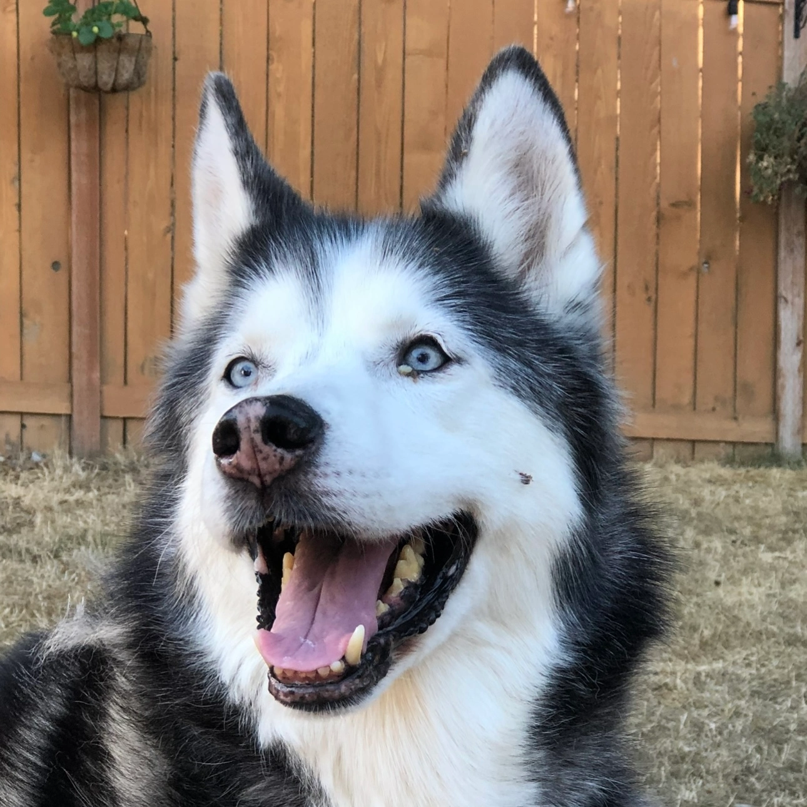
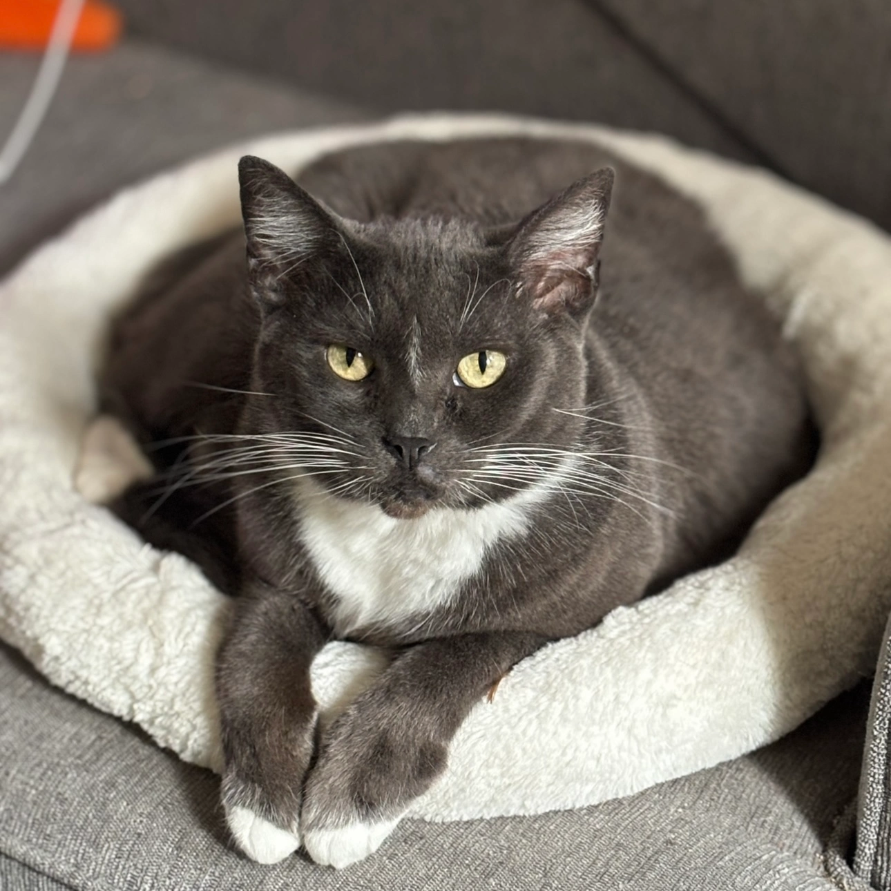
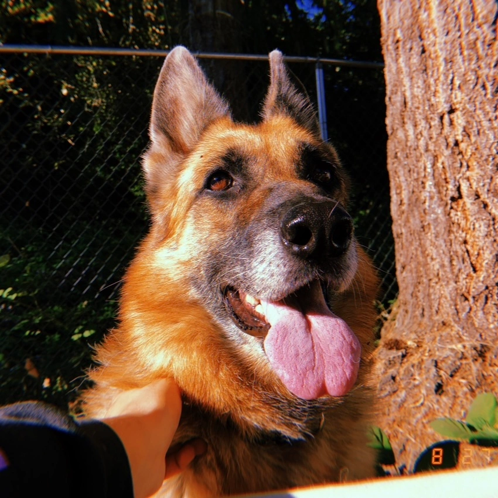

I am a lifelong animal lover raised around large dogs, indoor and outdoor cats, fish, and horses with over 9 years experience doing in-home pet care and a background in full-stack software development and commission art.
Specializing in long-term vacation care while working as a freelance developer allows me to prioritize your pets needs and schedule any time of day by working remotely. This schedule is great for high anxiety and constant care pets that need supervision or medication schedules while keeping pets comfortable in their regular routines at home!
I provide in-home pet care services including workday check-ins and walks, litterbox and kennel cleaning, basic grooming, bathing, administering medications, and overnight long-term vacation care starting at $75 a day.
Being raised with a german shepherd and siberian husky, I am comfortable handling and interacting with large active dogs. I have experience providing care for a wide range of animals including dogs, cats, fish, birds, and horses, as well as frogs, snakes, bearded dragons, and turtles.
While sitting I am happy to water plants, sign for packages, and transport pets to appointments. I send daily photos and ensure pets are kept clean, comfortable, exercised, and fed!


